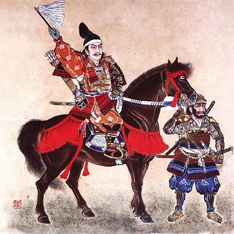
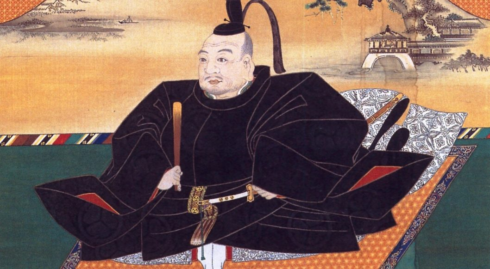
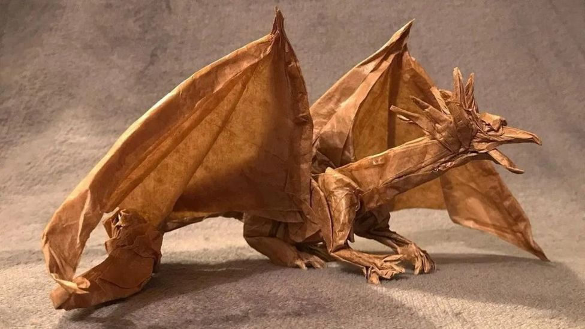

L'origine degli origami giapponesi è strettamente legata alla
religione shintoista. La parola carta e dei si pronunciano entrambe
kami. Le prime forme di origami, dette go-hei, erano semplici strisce
di carta piegate in forme geometriche, utilizzate per delimitare gli
spazi sacri. Con il tempo, queste pieghe si sono evolute in forme più
complesse, come la gru, simbolo di purezza.
Il Periodo Heian

Durante il periodo Heian (794-1185 d.C.), l'origami si afferma come
simbolo di raffinatezza. La tradizione della bambola fluttuante
(Hina-nagashi) evolve nella festa delle bambole (Hinamatsuri), dove
origami rappresentano la gerarchia sociale della corte imperiale.
Kodomo no hi: Kusudama contro gli
spiriti maligni. Obon: Barchette
di carta per le anime dei defunti.
Tanabata: Decorazioni per la
Festa delle stelle.
Il Periodo Edo

La gru, perfezionata nel XVIII secolo, diventa simbolo di immortalità
e pace. La leggenda narra che piegare mille gru esaudisce i desideri.
Akira Yoshizawa ha rivoluzionato l'origami con tecniche come il
wet-folding, portandolo a una diffusione globale.
L'Origami moderno e l'Occidente

L'origami si diffonde in Europa nel XIX secolo grazie a opere come
"Sembazuru Orikata" e "Kan no mado". Nel XX secolo, artisti come Josef
Albers e Kunihiko Kasahara hanno contribuito a sviluppare l'origami
come arte autonoma, influenzando design, moda e scienza.